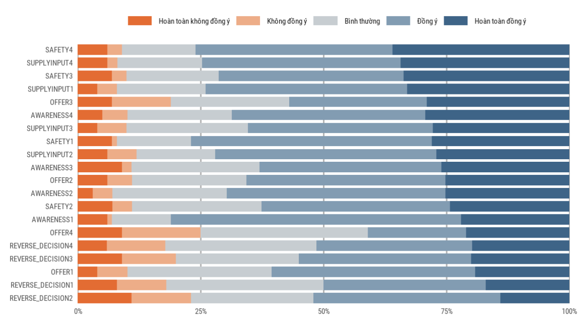
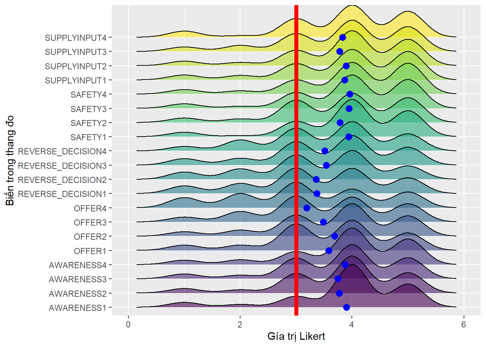
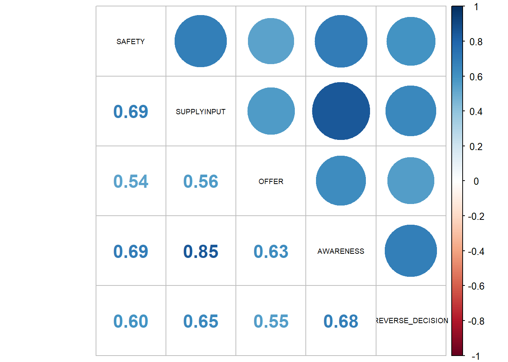

This is my tutorial of implementing the mediation analyst in R.
Author
Cao Xuân Lộc
Published
August 27, 2024
1 Input:
I cannot share the data so you can see figures below illustrated how data looks like.
1.1 Prepare the dataset:
Likert data is a type of ordinal data used in surveys and questionnaires to measure attitudes, opinions, or perceptions. Named after psychologist Rensis Likert, who developed the scale, it typically involves respondents indicating their level of agreement or disagreement with a series of statements on a scale.
Key Features:
Scale Structure: Likert scales often use a 5-point or 7-point scale, ranging from strong disagreement to strong agreement. For example, a 5-point scale might include options like “Strongly Disagree,” “Disagree,” “Neutral,” “Agree,” and “Strongly Agree.”
Ordinal Nature: The data collected are ordinal, meaning they represent ordered categories, but the intervals between them are not necessarily equal. For example, the difference between “Agree” and “Strongly Agree” isn’t quantifiable in the same way as numerical data.
Data Analysis: Likert data is often analyzed using descriptive statistics like means and standard deviations, as well as inferential statistics to explore relationships or differences between groups. While some analyses treat the data as interval-level for convenience, it’s crucial to remember its ordinal nature.
Applications: Likert data is commonly used in social science research, customer satisfaction surveys, and employee feedback forms to gauge attitudes and opinions.
Rows: 208
Columns: 13
$ SEX <fct> Nam, Nữ, Nam, Nam, Nữ, Nam, Nữ, Nam, Nữ, Nữ, Nữ, Nam,…
$ AGE <fct> Từ 19 đến 30 tuổi, Từ 19 đến 30 tuổi, Từ 19 đến 30 tu…
$ MAJOR <fct> Trí thức, Học sinh - Sinh viên, Học sinh - Sinh viên,…
$ STATUS <fct> Đã có gia đình, Độc thân, Độc thân, Đang có người yêu…
$ RETURN_EW <fct> 1, 1, 0, 0, 1, 1, 0, 0, 0, 0, 0, 0, 0, 0, 0, 0, 0, 0,…
$ PRE_METHOD <fct> Vứt rác, Bán ve chai, Vứt rác, Bán ve chai, Bán ve ch…
$ JOIN_HAND <fct> 1, 1, 0, 1, 0, 1, 1, 1, 1, 1, 1, 1, 1, 1, 0, 1, 1, 1,…
$ PRIOR <fct> Hoàn trả doanh nghiệp, Hoàn trả doanh nghiệp, Không b…
$ SAFETY <dbl> 4.00, 3.75, 3.75, 3.25, 3.00, 5.00, 4.00, 4.00, 3.50,…
$ OFFER <dbl> 3.00, 3.50, 3.25, 3.75, 3.00, 5.00, 4.00, 4.00, 4.00,…
$ AWARENESS <dbl> 3.00, 3.75, 3.25, 3.50, 3.00, 5.00, 3.50, 4.00, 4.75,…
$ SUPPLYINPUT <dbl> 3.00, 4.50, 3.75, 4.00, 3.00, 5.00, 3.25, 4.00, 4.75,…
$ REVERSE_DECISION <dbl> 3.00, 2.50, 3.25, 2.75, 3.00, 5.00, 4.00, 4.00, 4.75,…
1.1.1 Likert chart:
Overall, Likert scales are a popular and useful tool for capturing subjective information, though the ordinal nature of the data requires careful consideration in analysis and interpretation.

1.1.2 The distribution plot of likert scales:
In other hand, we can use a distribution plot of Likert data visualizes how responses are distributed across the different scale points. Given the ordinal nature of Likert data, such a plot helps to understand the frequency or proportion of responses for each category on the scale.
Steps to Create a Distribution Plot for Likert Data:
Collect Data: Gather your Likert scale responses from the survey or questionnaire.
Tabulate Responses: Count the number of responses for each Likert scale point (e.g., “Strongly Disagree” to “Strongly Agree”).
Choose a Visualization Tool: You can use various tools like Excel, Google Sheets, or statistical software (e.g., R, Python’s Matplotlib/Seaborn) to create the plot.
Plot the Data: you can consider between Bar Chart - where each bar represents the frequency or percentage of responses for each scale point or Pie Chart which shows the proportion of responses for each scale point. If you are dealing with multiple groups or categories, Stacked Bar Chart maybe useful where bars are segmented to show the distribution across the Likert scale for each group.

1.1.3 The Correlation coefficients analyst:
A correlation test is used to determine the strength and direction of the relationship between two continuous variables. It assesses whether changes in one variable are associated with changes in another variable.

2 Output:
2.1 Mediation analyst approach:
A mediation model examines whether the effect of an independent variable (X) on a dependent variable (Y) is transmitted through a third variable, called a mediator (M). For the mediation analysis to be valid and reliable, certain assumptions must be met. Here are the key assumptions:
Steps in Mediation Analysis:
Test the Total Effect:
Examine the direct relationship between the independent variable (X) and the dependent variable (Y).
Test the Path from X to M:
Analyze the relationship between the independent variable (X) and the mediator (M).
Test the Path from M to Y:
Assess the relationship between the mediator (M) and the dependent variable (Y), controlling for the independent variable (X).
Test the Direct Effect:
Examine the direct effect of the independent variable (X) on the dependent variable (Y) while controlling for the mediator (M).
Compare Effects:
Determine if the mediation effect (indirect effect) is significant and if it explains the relationship between X and Y beyond the direct effect.
Statistical Methods:
Baron and Kenny’s Approach: Traditional method involving sequential regression analyses to test the above paths.
Bootstrapping: A resampling technique used to estimate the confidence intervals of the indirect effect, often considered more robust than Baron and Kenny’s approach.
Structural Equation Modeling (SEM): A comprehensive method that can simultaneously estimate multiple mediation paths and their relationships.
By meeting these assumptions and carefully testing the mediation model, researchers can better understand the mechanisms through which an independent variable influences a dependent variable, providing deeper insights into the underlying processes.
2.1.1 Check assumptions before modeling:
Assumptions of a Mediation Model:
Linearity:
The relationships among the independent variable (X), mediator (M), and dependent variable (Y) should be linear. This means that the effects are additive and can be represented by straight lines in a scatterplot.
Independence of Errors:
The residuals or errors in the regression equations should be independent of each other. This assumption ensures that the model is not influenced by correlated errors between observations.
Homoscedasticity:
The variance of the residuals should be constant across all levels of the independent and mediator variables. In other words, the spread of errors should be similar across all values of X and M.
Normality of Errors:
The residuals or errors in the regression models should be normally distributed. This assumption helps in making valid inferences about the model parameters and their statistical significance.
No Multicollinearity:
There should be no high correlation among the independent variables, including the mediator variable, as high multicollinearity can make it difficult to isolate the individual effects of each variable.
Measurement Validity:
The variables should be measured accurately. This means the mediator (M) should genuinely capture the concept it is supposed to represent, and there should be reliable and valid measures for X, M, and Y.
Temporal Ordering:
For causal inferences, it is crucial that the independent variable (X) precedes the mediator (M), which in turn precedes the dependent variable (Y). This temporal ordering ensures that changes in X can affect M, which then influences Y.
2.2 Implementing in R:
Code
## Using the {mvnormalTest} package for univariate (Shapiro-Wilk’s W) and multivariate normality (Mardia’s Multivariate Skewness and Kurtosis tests).library(mvnormalTest)check<-mardia(df_new %>%select(c("SAFETY","OFFER","AWARENESS","SUPPLYINPUT","REVERSE_DECISION")))## Check the Univariate normality testcheck$uv.shapiro## Check the Multivariate normaility testcheck$mv.test
W p-value UV.Normality
SAFETY 0.8643 0 No
OFFER 0.9484 0 No
AWARENESS 0.8844 0 No
SUPPLYINPUT 0.8857 0 No
REVERSE_DECISION 0.9473 0 No
Test Statistic p-value Result
1 Skewness 221.3551 0 NO
2 Kurtosis 12.3111 0 NO
3 MV Normality <NA> <NA> NO
2.2.1 Modeling with {lavaan} package:
The lavaan package in R is a powerful tool for structural equation modeling (SEM). It allows users to specify, estimate, and evaluate complex statistical models that include latent variables, measurement models, and path models. Here’s an overview of the lavaan package and its key functionalities:
About model Structural Equation Modeling (SEM) in lavaan, it will estimate:
Confirmatory Factor Analysis (CFA): Tests how well a set of observed variables represents underlying latent constructs.
Path Analysis: Examines direct and indirect relationships among variables.
Latent Variable Models: Models that include unobserved (latent) variables alongside observed variables.
Mixture Models: Handles latent variable models with multiple subpopulations.
Beside, the estimated algorithm, lavaan use 3 methods including Maximum Likelihood (ML), Generalized Least Squares (GLS), and Robust Maximum Likelihood (MLR).
Tips for you !!!
You can mention it by argument estimator in function lavaan::sem.
Code
##Define the model:library(lavaan)mediation_model <-' # Direct effects AWARENESS ~ a*SAFETY + b*OFFER + c*SUPPLYINPUT REVERSE_DECISION ~ d*AWARENESS + e*SAFETY + f*OFFER # Indirect effect: indirect := d*(a + b + c) # Total effect: total := e + f + indirect'##Estimate the mediation modelreg3 <-sem(mediation_model,estimator ="ML",data = df_new)##Summarize the resultssummary(reg3, standardized =TRUE, fit.measures =TRUE)
lavaan 0.6.14 ended normally after 1 iteration
Estimator ML
Optimization method NLMINB
Number of model parameters 8
Number of observations 208
Model Test User Model:
Test statistic 2.839
Degrees of freedom 1
P-value (Chi-square) 0.092
Model Test Baseline Model:
Test statistic 452.569
Degrees of freedom 7
P-value 0.000
User Model versus Baseline Model:
Comparative Fit Index (CFI) 0.996
Tucker-Lewis Index (TLI) 0.971
Loglikelihood and Information Criteria:
Loglikelihood user model (H0) -345.801
Loglikelihood unrestricted model (H1) -344.381
Akaike (AIC) 707.601
Bayesian (BIC) 734.302
Sample-size adjusted Bayesian (SABIC) 708.954
Root Mean Square Error of Approximation:
RMSEA 0.094
90 Percent confidence interval - lower 0.000
90 Percent confidence interval - upper 0.231
P-value H_0: RMSEA <= 0.050 0.176
P-value H_0: RMSEA >= 0.080 0.700
Standardized Root Mean Square Residual:
SRMR 0.011
Parameter Estimates:
Standard errors Standard
Information Expected
Information saturated (h1) model Structured
Regressions:
Estimate Std.Err z-value P(>|z|) Std.lv Std.all
AWARENESS ~
SAFETY (a) 0.153 0.048 3.197 0.001 0.153 0.154
OFFER (b) 0.185 0.042 4.401 0.000 0.185 0.186
SUPPLYINPU (c) 0.614 0.047 12.967 0.000 0.614 0.636
REVERSE_DECISION ~
AWARENESS (d) 0.458 0.077 5.922 0.000 0.458 0.435
SAFETY (e) 0.218 0.071 3.068 0.002 0.218 0.208
OFFER (f) 0.176 0.066 2.668 0.008 0.176 0.168
Variances:
Estimate Std.Err z-value P(>|z|) Std.lv Std.all
.AWARENESS 0.206 0.020 10.198 0.000 0.206 0.238
.REVERSE_DECISI 0.463 0.045 10.198 0.000 0.463 0.484
Defined Parameters:
Estimate Std.Err z-value P(>|z|) Std.lv Std.all
indirect 0.436 0.076 5.754 0.000 0.436 0.425
total 0.830 0.061 13.658 0.000 0.830 0.802
Code
##Plot the result:label1<-list(SAFETY ="Sự an toàn",OFFER ="Sự ưu đãi",SUPPLYINPUT ="Cung cấp nguyên liệu đầu vào",AWARENESS ="Nhận thức xã hội",REVERSE_DECISION ="Quyết định tham gia Logistics ngược")lavaanPlot::lavaanPlot(model = reg3,labels = label1, node_options =list(shape ="box", fontname ="Helvetica"),edge_options =list(color ="grey"),coefs =TRUE)
2.2.2 Modeling with {mediation} package:
The mediation package in R is designed to facilitate the analysis of mediation models. Mediation models are used to understand the process through which an independent variable (IV) influences a dependent variable (DV) via one or more mediator variables. Here’s a brief summary of what the package offers:
Core Functionality: The primary function of the mediation package is mediate(), which estimates the causal mediation effects and provides statistical tests to evaluate the significance of these effects.
Components:
Model Specification: You need to fit two models—one for the mediator and one for the outcome variable. The mediation package uses these models to estimate the direct and indirect effects.
Bootstrapping: The package supports bootstrapping methods to compute confidence intervals for the indirect effects, enhancing robustness and reliability.
Key Features:
Estimation of Effects: Provides estimates for direct, indirect, and total effects, allowing for a comprehensive understanding of mediation.
Sensitivity Analysis: Offers tools to assess the sensitivity of the mediation effect to potential violations of assumptions.
Multiple Mediators: Supports models with multiple mediators, including interactions among them.
Output:
Summary Tables: Produces tables summarizing the estimated effects and their significance.
Visualization: Tools to visualize mediation effects, helping to interpret and present findings.
Usage:
You typically fit a regression model for the mediator and another for the outcome, then use mediate() to analyze the mediation process.
Code
##Or we can use Preacher & Hayes (2004) approach:###Using meidation package:library(mediation)fitM <-lm(AWARENESS ~ SUPPLYINPUT + SAFETY + OFFER, data=df_new) fitY <-lm(REVERSE_DECISION ~ AWARENESS + SAFETY + OFFER, data=df_new)fitMed <-mediate(fitM, fitY,sims =1000,boot =TRUE,treat ="SAFETY",mediator="AWARENESS")summary(fitMed)
Average Direct Effects (ADE) means direct effect of SAFETY and OFFER on REVERSE_DECISION without AWARENESS.
Combined indirect and direct effects (Total Effect) means total effect of SAFETY and OFFER on REVERSE_DECISION plus the indirect effect of AWARENESS.
Average Causal Mediation Effects (ACME) = Total Effect - ADE
The ratio of these estimates (Prop. Mediated).
The ACME here is the indirect effect of M (total effect - direct effect) and thus this value tells us if our mediation effect is significant (Alyssa Blair, n.d.).
In summary, the mediation package in R is a robust tool for analyzing and interpreting the pathways through which variables influence each other, providing both statistical estimates and tools for visualization and sensitivity analysis.
2.2.3 Check assumptions after modeling:
The gvlma function in R is part of the gvlma package, which stands for “Global Validation of Linear Models Assumptions.” This function is used to perform a comprehensive diagnostic check of the assumptions underlying linear regression models. The gvlma package evaluates several key assumptions to ensure the validity of a linear regression model.
A lot of test gvlma can do such as:
Linearity: Checks if the relationship between predictors and the outcome is linear.
Homoscedasticity: Assesses if the residuals have constant variance.
Independence: Tests if the residuals are independent.
Normality of Residuals: Checks if residuals are normally distributed.
Model Specification: Evaluates whether the model is correctly specified.
Code
library(gvlma)gvlma(fitM)
Call:
lm(formula = AWARENESS ~ SUPPLYINPUT + SAFETY + OFFER, data = df_new)
Coefficients:
(Intercept) SUPPLYINPUT SAFETY OFFER
0.2243 0.6135 0.1528 0.1852
ASSESSMENT OF THE LINEAR MODEL ASSUMPTIONS
USING THE GLOBAL TEST ON 4 DEGREES-OF-FREEDOM:
Level of Significance = 0.05
Call:
gvlma(x = fitM)
Value p-value Decision
Global Stat 4.2262378 0.37625 Assumptions acceptable.
Skewness 0.0004398 0.98327 Assumptions acceptable.
Kurtosis 2.7098541 0.09973 Assumptions acceptable.
Link Function 1.2198735 0.26939 Assumptions acceptable.
Heteroscedasticity 0.2960704 0.58636 Assumptions acceptable.
Code
gvlma(fitY)
Call:
lm(formula = REVERSE_DECISION ~ AWARENESS + SAFETY + OFFER, data = df_new)
Coefficients:
(Intercept) AWARENESS SAFETY OFFER
0.2296 0.4580 0.2178 0.1760
ASSESSMENT OF THE LINEAR MODEL ASSUMPTIONS
USING THE GLOBAL TEST ON 4 DEGREES-OF-FREEDOM:
Level of Significance = 0.05
Call:
gvlma(x = fitY)
Value p-value Decision
Global Stat 1.271e+02 0.000e+00 Assumptions NOT satisfied!
Skewness 5.919e+01 1.432e-14 Assumptions NOT satisfied!
Kurtosis 6.787e+01 2.220e-16 Assumptions NOT satisfied!
Link Function 8.530e-04 9.767e-01 Assumptions acceptable.
Heteroscedasticity 2.851e-02 8.659e-01 Assumptions acceptable.